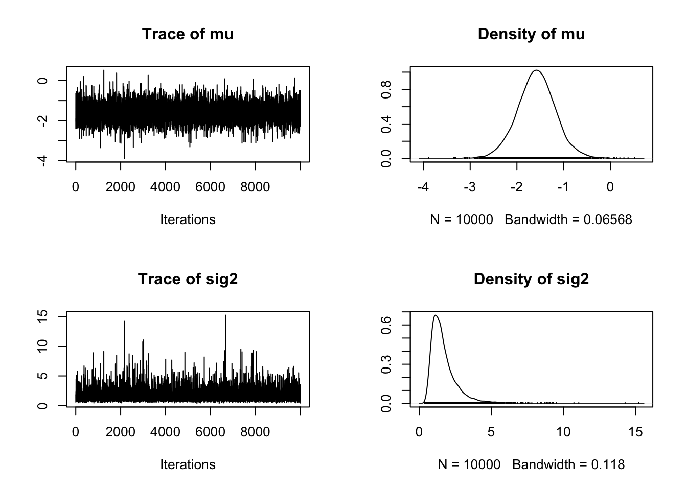

set.seed(1)
dat = data.frame(matrix(runif(20000), ncol = 100))
dat$y = rnorm(200)
dat$y = dat$y + rowSums(dat[,1:10]) 5 Bayesian model selection
5.1 Regularization

As an example, I will create a dataset with 100 predictors, of which the first 10 have an effect.
We can look at the results of a standard frequentist regression with all predictors
fullModel = lm(y ~ . , data = dat)
#summary(fullModel)
barplot(coef(fullModel), las = 2)
5.1.1 Mildly regularizing priors
library(rjags)Loading required package: codaLinked to JAGS 4.3.0Loaded modules: basemod,bugsdat2 = data.frame(scale(dat)) # also response has to be scaled for adaptive shrinkage!
Data = list(y = dat2$y, x = as.matrix(dat2)[,1:100], i.max = nrow(dat2))
# fitting the full model - no problem for Jags
modelCode = "model{
# Likelihood
for(i in 1:i.max){
mu[i] <- inprod(a , x[i,]) + b
y[i] ~ dnorm(mu[i],tau)
}
# Prior distributions
for(i in 1:100){
a[i] ~ dnorm(0,0.01)
}
b ~ dnorm(0,0.01)
tau ~ dgamma(0.001, 0.001)
sigma <- 1/sqrt(tau)
}
"
jagsModel <- jags.model(file= textConnection(modelCode), data=Data, n.chains = 3)Compiling model graph
Resolving undeclared variables
Allocating nodes
Graph information:
Observed stochastic nodes: 200
Unobserved stochastic nodes: 102
Total graph size: 20910
Initializing modelpara.names <- c("a","b","sigma")
Samples <- coda.samples(jagsModel, variable.names = para.names, n.iter = 5000)
#gelman.diag(Samples)
#summary(Samples)
x1<- summary(Samples)5.1.2 Classical L1 / L2 shrinkage
Regularization via prior - Lasso and Ridge equivalents. Idea is that we put a kind of “random effect” directly on the parameter values
Kyung, M.; Gill, J.; Ghosh, M.; Casella, G. et al. (2010) Penalized regression, standard errors, and Bayesian lassos. Bayesian Analysis, 5, 369-411.
http://stats.stackexchange.com/questions/95395/ridge-regression-bayesian-interpretation?rq=1
http://stats.stackexchange.com/questions/28609/regularized-bayesian-logistic-regression-in-jags
http://doingbayesiandataanalysis.blogspot.de/2014/01/bayesian-variable-selection-in-multiple.html
Here a version with adaptive shrinkage, i.e. we estimate the strength of the shrinkage via a hyperprior
modelCode = "model{
# Likelihood
for(i in 1:i.max){
mu[i] <- inprod(a , x[i,]) + b
y[i] ~ dnorm(mu[i],tau)
}
# Prior distributions
for(i in 1:100){
a[i] ~ dnorm(0,tauShrinkage)
}
b ~ dnorm(0,0.001)
tauShrinkage ~ dgamma(0.001, 0.001)
sdShrinkage <- 1/sqrt(tauShrinkage)
tau ~ dgamma(0.001, 0.001)
sigma <- 1/sqrt(tau)
}
"
# s = function(x) dgamma(x, shape = 0.0001, rate = 0.001)
# curve(s, 0, 5)
jagsModel <- jags.model(file= textConnection(modelCode), data=Data, n.chains = 3)Compiling model graph
Resolving undeclared variables
Allocating nodes
Graph information:
Observed stochastic nodes: 200
Unobserved stochastic nodes: 103
Total graph size: 20912
Initializing modelpara.names <- c("a","b","sigma", "sdShrinkage")
Samples <- coda.samples(jagsModel, variable.names = para.names, n.iter = 5000)
#gelman.diag(Samples)
#summary(Samples)
x2<- summary(Samples)5.1.3 Spike and slap
Mixtures of both - Spike and Slab Variable Selection
https://darrenjw.wordpress.com/2012/11/20/getting-started-with-bayesian-variable-selection-using-jags-and-rjags/
Ishwaran, H. & Rao, J. S. (2005) Spike and Slab Variable Selection: Frequentist and Bayesian Strategies. The Annals of Statistics, Institute of Mathematical Statistics, 33, pp. 730-773.
modelCode = "model{
# Likelihood
for(i in 1:i.max){
mu[i] <- inprod(a , x[i,]) + b
y[i] ~ dnorm(mu[i],tau)
}
# Prior distributions
pind ~ dbeta(5,5)
for(j in 1:100){
a_raw[j] ~ dnorm(0,0.01)
ind[j] ~ dbern(pind)
a[j] = ind[j] * a_raw[j]
}
b ~ dnorm(0,0.01)
tau ~ dgamma(0.001, 0.001)
sigma <- 1/sqrt(tau)
}
"
jagsModel <- jags.model(file= textConnection(modelCode), data=Data, n.chains = 3)Compiling model graph
Resolving undeclared variables
Allocating nodes
Graph information:
Observed stochastic nodes: 200
Unobserved stochastic nodes: 203
Total graph size: 21112
Initializing modelpara.names <- c("a_raw", "ind","sigma")
Samples <- coda.samples(jagsModel, variable.names = para.names, n.iter = 5000)
#summary(Samples)
#gelman.diag(Samples)
x3<- summary(Samples)
# looking at the selection
res3 <- x3$statistics[101:200,1]
barplot(res3, names.arg = 1:100, las = 2)par(mfrow = c(1,3))
res1 <- x1$quantiles[1:100,3]
barplot(res1, names.arg = 1:100, las = 2)
abline(h = 1)
abline(v = 12)
res2 <- x2$quantiles[1:100,3]
barplot(res2, names.arg = 1:100, las = 2)
abline(h = 1)
abline(v = 12)
res3 <- x3$quantiles[101:200,3] * x3$quantiles[1:100,3]
barplot(res3, names.arg = 1:100, las = 2)
abline(h = 1)
abline(v = 12)Comparison side by side for the first 20 values
barplot(rbind(res1, res2, res3)[,1:20], beside = T)5.2 Bayes Factors
Bayes’ formula makes no fundamental difference between models and parameters. Hence, to perform inference with multiple models, we can simply write down the joint posterior \(P(M_i, \Theta_i| D)\) of different models \(M_i\) with parameter vectors \(\Theta_i\) as
\[ P(M_i, \Theta_i| D) = L(D|M_i , \Theta_i) \cdot p(\Theta_i) \cdot p(M_i) \]
where \(L(D|M_i , \Theta_i)\) is the likelihood of model \(M_i\), \(p(\Theta_i)\) is the prior distribution of model \(M_i\), and \(p(M_i)\) is the prior weight on model \(M_i\). The figure below provides a graphical illustration of this situation, assuming three models with an increasing number of parameters.
In principle, the joint distribution depicted in the figure provides the full information that can be obtained from the inference, but in most practical cases we want to get some simplified statistics across this distribution such as “the most likely model”, or “the combined uncertainty of a parameter of prediction”. To obtain such information, there are two routes that we can take - marginalize (average) across parameters space, and marginalize across model space.
If we marginalize across parameter space, we obtain model weights. The first step to do so is calculating the marginal likelihood, defined as the average of eq.\(\ref{eq: joint posterior}\) across all parameters for any given model:
\[ P(D|M_i) = \int L(D|M_i , \Theta_i) \cdot p(\Theta_i) d \Theta_i \]
From the marginal likelihood, we can compare models via the “Bayes factor”, defined as the ratio of their marginal likelihoods, multiplied by the ratio of their model priors \(p(M_i)\)
\[ BF_{i,j} = \frac{P(D|M_i)}{P(D|M_j)} \cdot \frac{p(M_i)}{p(M_j)} \]
For more than two models, however, it is more useful to standardize this quantity across all models in question, calculating a Bayesian posterior model weight as
\[ BMW_i = \frac{P(D|M_i)}{\sum_j P(D|M_j)} \cdot \frac{p(M_i)}{\sum_j p(M_j)} \]
The second route we can take is to marginalize across models to obtain averaged parameters. Note that this makes only sense if the models have some parameters in common (nested models). To obtain the averaged parameters, we simply marginalize across model space
\[ P(\Theta | D) = \sum_i L(D|M_i , \Theta_i) \cdot p(\Theta_i) \cdot p(M_i) \]
resulting in averaged distributions for the parameters.
For simple models, BF can be calculated using the BayesFactor package
library(BayesFactor)Loading required package: Matrix************
Welcome to BayesFactor 0.9.12-4.7. If you have questions, please contact Richard Morey (richarddmorey@gmail.com).
Type BFManual() to open the manual.
************data(sleep)
## Compute difference scores
diffScores = sleep$extra[1:10] - sleep$extra[11:20]
## Traditional two-tailed t test
t.test(diffScores)
One Sample t-test
data: diffScores
t = -4.0621, df = 9, p-value = 0.002833
alternative hypothesis: true mean is not equal to 0
95 percent confidence interval:
-2.4598858 -0.7001142
sample estimates:
mean of x
-1.58 bf = ttestBF(x = diffScores, rscale = 10)
bfBayes factor analysis
--------------
[1] Alt., r=10 : 4.521117 ±0%
Against denominator:
Null, mu = 0
---
Bayes factor type: BFoneSample, JZSchains = posterior(bf, iterations = 1000)
summary(chains)
Iterations = 1:1000
Thinning interval = 1
Number of chains = 1
Sample size per chain = 1000
1. Empirical mean and standard deviation for each variable,
plus standard error of the mean:
Mean SD Naive SE Time-series SE
mu -1.584 0.4174 0.01320 0.01435
sig2 1.763 1.0318 0.03263 0.03463
delta -1.303 0.4221 0.01335 0.01335
g 302.698 1682.2298 53.19678 53.19678
2. Quantiles for each variable:
2.5% 25% 50% 75% 97.5%
mu -2.3493 -1.853 -1.587 -1.340 -0.7136
sig2 0.6711 1.117 1.507 2.120 4.2918
delta -2.1236 -1.601 -1.306 -1.003 -0.4651
g 13.2340 35.203 70.968 179.638 1826.9768chains2 = recompute(chains, iterations = 10000)
plot(chains2[,1:2])
5.2.1 Estimation of the marginal likelihood
While the definition of the Bayesian model weights and averaged parameters is straightforward, the estimation of these quantities is often not. In practice, there are two options to estimate the quantities defined above numerically, both with a number of caveats.
The first option is to sample directly from the joint posterior of the models and the parameters. Basic algorithms such as rejection sampling can do that without any modification (Toni-ApproximateBayesiancomputation-2009), but they are inefficient for higher-dimensional parameter spaces. More sophisticated algorithms such as MCMC and SMC require modifications to deal with the issue of a changing number of parameters when changing between models, as well as with the issue of a changed meaning of the parameters. Such modifications (the most common class are the reversible-jump MCMCs (RJ-MCMC)) are often difficult to program, tune and generalize, which is the reason why they are typically only applied in specialized, well defined settings with a large number of models to be compared.
The second option is to approximate the marginal likelihood each model independently, and then average parameters or predictions based on the resulting weights. To approximate the marginal likelihood, one has to cover the parameter space with of each single model, e.g. with random sampling or MCMC, store the likelihood, and then compute the marginal likelihood from that. The challenge here is to get a stable approximation of the marginal likelihood, which can be connected with considerable problems -ComputingBayesfactor-2012. Nevertheless, because of the comparably easier implementation, this approach the more common choice in situations where the number of models to be compared is low.
http://stats.stackexchange.com/questions/229852/why-is-the-bayes-factor-sometimes-considered-more-important-than-the-posterior-o
http://stats.stackexchange.com/questions/27345/likelihood-ratio-vs-bayes-factor
The following example shows a comparison of two regression models using the BT package
library(BayesianTools)
?BayesianTools::marginalLikelihood
# Creating test data with quadratic relationship
sampleSize = 30
x <- (-(sampleSize-1)/2):((sampleSize-1)/2)
y <- 1 * x + 1*x^2 + rnorm(n=sampleSize,mean=0,sd=10)
# plot(x,y, main="Test Data")
# likelihoods for linear and quadratic model
likelihood1 <- function(param){
pred = param[1] + param[2]*x + param[3] * x^2
singlelikelihoods = dnorm(y, mean = pred, sd = 1/(param[4]^2), log = TRUE)
return(sum(singlelikelihoods))
}
likelihood2 <- function(param){
pred = param[1] + param[2]*x
singlelikelihoods = dnorm(y, mean = pred, sd = 1/(param[3]^2), log = TRUE)
return(sum(singlelikelihoods))
}
setUp1 <- createBayesianSetup(likelihood1,
lower = c(-5,-5,-5,0.01),
upper = c(5,5,5,30))
setUp2 <- createBayesianSetup(likelihood2,
lower = c(-5,-5,0.01),
upper = c(5,5,30))
out1 <- runMCMC(bayesianSetup = setUp1)
M1 = marginalLikelihood(out1, start = 1000)
out2 <- runMCMC(bayesianSetup = setUp2)
M2 = marginalLikelihood(out2, start = 1000)### Calculating Bayes factor
exp(M1$ln.ML - M2$ln.ML)[1] 4.057075e+29# BF > 1 means the evidence is in favor of M1. See Kass, R. E. & Raftery, A. E.
# (1995) Bayes Factors. J. Am. Stat. Assoc., Amer Statist Assn, 90, 773-795.
### Calculating Posterior weights
exp(M1$ln.ML) / ( exp(M1$ln.ML) + exp(M2$ln.ML))[1] 1# If models have different model priors, multiply with the prior probabilities of each model. 5.2.2 Prior influence on the marginal likelihood
A problem that is often not sufficiently appreciated when performing Bayesian inference across multiple models is the influence of the choice of uninformative parameter priors on the model weight.
The issue arises because the prior density enters the marginal likelihood multiplicative. Although this follows directly from the joint posterior definition and is logically completely consistent, it has the somewhat intuitive consequence that increasing the width width of an uninformative prior will linearly decrease the marginal likelihood (Sinharay-SensitivityBayesFactors-2002). In particular, for an infinitely wide (inproper) uninformative prior, the model weight goes to zero, regardless of the fit. This behavior is surprising to many practitioners of Bayesian analysis, because they are used to the fact that the influence of increasing prior width on uninformative priors is minimal for fitting parameters.
# Motivation: ML is very dependent on the prior, which is a problem if you
# have uninformative priors. you can see this via rerunning the upper
# example with changed priors - suddenly, support for M1 is gone
setUp1 <- createBayesianSetup(likelihood1,
lower = c(-500,-500,-500,0.01),
upper = c(500,500,500,3000))
setUp2 <- createBayesianSetup(likelihood2,
lower = c(-500,-500,0.01),
upper = c(500,500,3000))
out1 <- runMCMC(bayesianSetup = setUp1)
M1 = marginalLikelihood(out1, start = 1000)
out2 <- runMCMC(bayesianSetup = setUp2)
M2 = marginalLikelihood(out2, start = 1000)Calculating Bayes factor
exp(M1$ln.ML - M2$ln.ML)[1] 832.15845.2.3 Fractional BF
The fact that Bayesian model weights are strongly dependent on the width of the prior choice has sparked discussion of the appropriateness of this approach in situations with uninformative priors. For example, in situations where multiple nested models are compared, the width of the uniformative prior may completely determine the complexity of models that are being selected. One suggestion that has been made is not to perform multi-model inference with uninformative priors at all, or that at least additional analysis is necessary to find parameter priors that are sensible for the multi-model setup at hand. Another solution is to calibrate the model on a part of the data first, use the result as new priors and then perform the analysis described above (intrinsic Bayes factor (Berger-IntrinsicBayesFactor-1996), fractional Bayes factor (OHagan-FractionalBayesFactors-1995)). If sufficient data is available so that the likelihood falls off sufficiently strong during the calibration step, this approach should nearly eliminate any ambiguity resulting from the prior choice.
# likelihoods with half the data
likelihood1 <- function(param){
pred = param[1] + param[2]*x + param[3] * x^2
singlelikelihoods = dnorm(y, mean = pred, sd = 1/(param[4]^2), log = TRUE)
return(sum(singlelikelihoods[seq(1, 30, 2)]))
}
likelihood2 <- function(param){
pred = param[1] + param[2]*x
singlelikelihoods = dnorm(y, mean = pred, sd = 1/(param[3]^2), log = TRUE)
return(sum(singlelikelihoods[seq(1, 30, 2)]))
}
setUp1 <- createBayesianSetup(likelihood1,
lower = c(-500,-500,-500,0.01),
upper = c(500,500,500,3000))
setUp2 <- createBayesianSetup(likelihood2,
lower = c(-500,-500,0.01),
upper = c(500,500,3000))
out1 <- runMCMC(bayesianSetup = setUp1)
out2 <- runMCMC(bayesianSetup = setUp2)
newPrior1 = createPriorDensity(out1, start = 200,
lower = c(-500,-500,-500,0.01),
upper = c(500,500,500,3000))
newPrior2 = createPriorDensity(out2, start = 200,
lower = c(-500,-500,0.01),
upper = c(500,500,3000))
# now rerun this with likelihoods for the other half of the data and new prior
likelihood1 <- function(param){
pred = param[1] + param[2]*x + param[3] * x^2
singlelikelihoods = dnorm(y, mean = pred, sd = 1/(param[4]^2), log = TRUE)
return(sum(singlelikelihoods[seq(2, 30, 2)]))
}
likelihood2 <- function(param){
pred = param[1] + param[2]*x
singlelikelihoods = dnorm(y, mean = pred, sd = 1/(param[3]^2), log = TRUE)
return(sum(singlelikelihoods[seq(2, 30, 2)]))
}
setUp1 <- createBayesianSetup(likelihood1, prior = newPrior1)
setUp2 <- createBayesianSetup(likelihood2, prior = newPrior2)
out1 <- runMCMC(bayesianSetup = setUp1)
M1 = marginalLikelihood(out1, start = 1000)
out2 <- runMCMC(bayesianSetup = setUp2)
M2 = marginalLikelihood(out2, start = 1000)Calculating the fractional Bayes factor
exp(M1$ln.ML - M2$ln.ML)[1] 16672035.3 Information Criteria
5.3.1 DIC
DIC can be calculated in Jags using
dic = dic.samples(jagsModel, n.iter = 5000)This was for the previous model, which was the spike and slap. In the result, the penalty is the effective number of parameters of this model.
Note that this value is pretty low (around 12 parameters), which makes sense because although the spike and slap has formally 200 parameters, most of them are, as we have seen, ineffective.
Task: calculate DIA for the other prior regularizations above and observe the effective number of parameters
5.3.2 WAIC
It was suggested that WAIC has a bunch of favorable advantages over DIC, but it is also harder to calculate. In Jags, WAIC is a bit complicated. It is better supported in STAN and brms.
library(brms)
?waic
# model with population-level effects only
fit1 <- brm(rating ~ treat + period + carry,
data = inhaler)
waic1 <- waic(fit1)Warning:
2 (0.3%) p_waic estimates greater than 0.4. We recommend trying loo instead.# model with an additional varying intercept for subjects
fit2 <- brm(rating ~ treat + period + carry + (1|subject),
data = inhaler)
waic2 <- waic(fit2)Warning:
26 (4.5%) p_waic estimates greater than 0.4. We recommend trying loo instead.compare both models
loo_compare(waic1, waic2) elpd_diff se_diff
fit2 0.0 0.0
fit1 -9.8 4.4 5.3.3 Careful with model selection
Note that selection based on information criteria shares many of the same problems that appear in frequentist IC selection. Those are in particular
- Affects uncertainties, in particular p-values
- Destroys causal relationships
The issue is known under the term “post-selection inference” and applies to Bayesian and frequentist models alike, see e.g. Kuchibhotla, A. K., Kolassa, J. E., & Kuffner, T. A. (2022). Post-selection inference. Annual Review of Statistics and Its Application, 9, 505-527.
This example shows how AIC selection, followed by a conventional regression analysis of the selected model, massively inflates false positives.
set.seed(1)
library(MASS)
dat = data.frame(matrix(runif(20000), ncol = 100))
dat$y = rnorm(200)
fullModel = lm(y ~ . , data = dat)
summary(fullModel)
# 2 predictors out of 100 significant (on average, we expect 5 of 100 to be significant)
selection = stepAIC(fullModel, trace = F)
summary(lm(y ~ X1 + X2 + X3 + X5 + X7 + X13 + X20 + X23 + X30 +
X37 + X42 + X45 + X46 + X47 + X48 + X64 + X65 + X66 + X71 +
X75 + X80 + X81 + X87 + X88 + X89 + X90 + X94 + X100, data = dat))
# voila, 15 out of 28 (before 100) predictors significant - looks like we could have good fun to discuss / publish these results!
#######################################################
# Same thing, but now we put in 10 significant predictors (the first 10 x)
set.seed(1)
library(MASS)
dat = data.frame(matrix(runif(20000), ncol = 100))
dat$y = rnorm(200)
dat$y = dat$y + rowSums(dat[,1:10])
fullModel = lm(y ~ . , data = dat)
summary(fullModel)
# 2 predictors out of 100 significant (on average, we expect 5 of 100 to be significant)
selection = stepAIC(fullModel, trace = F)
summary(lm(y ~ X1 + X2 + X3 + X4 + X5 + X6 + X7 + X8 + X9 + X10 + X13 +
X14 + X20 + X23 + X24 + X26 + X30 + X37 + X42 + X46 + X47 +
X48 + X49 + X64 + X65 + X66 + X68 + X71 + X73 + X75 + X80 +
X81 + X87 + X88 + X89 + X90 + X94, data = dat))
# true positives are good, but false positives remain